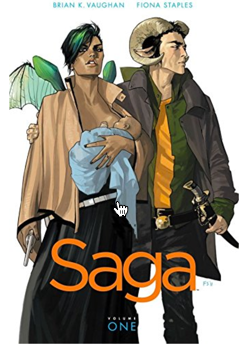

Stephanie Mabee
Feral by George Monbiot
This book has been on my "to be read" list for a number of years. It sounds like fascinating exploration of how we can reclaim our wild nature, both as individuals and as a society. And also because I know Rose has a wild side in the truest sense of the word.
Amazon.com
Pete Zroika

Saga by Brian Vaughan
What do you get when you mix Romeo and Juliet, Game of Thrones and Star Wars? Saga, the galaxy-spanning love story that begins with this volume. Comic books are fun!
Amazon.com
Jessica Hochreiter

The Polar Express by Chris Van Allsburg
I have vivid memories reading this book in my elementary school library, and has become a tradition for our family to read each winter (in addition to our matching pajamas). A beautiful reminder to always believe in the spirit of the holidays, and the innocence of being a child. Also, a special story for me, as Ryan proposed on The Polar Express in the Grand Canyon. The audio edition read by Liam Neeson is pretty great too! While the story is short for a plane ride, it’s something to make a tradition, especially since you’ll have snow in Utah! Post lots of photos, and turn up the 80’s music in your office!
Amazon.com
Monique Clement
Spin by Robert Charles Wilson
In a time of big change for you, my recommendation is a sci-fi story about big changes and uncertainty on Earth. I went into it not knowing anything and really enjoyed it, so I don’t want to give anything away!
Amazon.com
Above: I’m trying to look adventurous (like Rose), but the sun is too bright! :grimacing:
Erika Gronik
Recommendations
Elon Musk: Tesla, SpaceX, and the Quest for a Fantastic Future
...because I want to know what real life Iron Man is doing.
Amazon.com
The Singularity Is Near: When Humans Transcend Biology
...because I want to know where real life Iron Man gets his ideas.
Amazon.com
Bold: How to Go Big, Create Wealth and Impact the World
...because I want to know what Kurtzweil’s contemporaries are thinking.
Amazon.com
Me Talk Pretty One Day
...because David Sedaris and laughter go together.
Amazon.com
Joe Kullman

The Moth Presents All These Wonders: True Stories About Facing the Unknown
Whatever mine fields you have to walk through in life, the real-life stories in this book show you that someone somewhere has been in that very same scary place before you and made it out alive. My guess is that someone’s story here might help you break free from whatever kind of web you find yourself entangled in. Yes, some tales are sad but there are mostly happy and sometimes humorous endings.
New York Times Review | YouTube
Amazon.com
Erik Wirtanen
The Eyre Affair: A Thursday Next Novel by Jasper Fforde
I love the entire series of Thursday Next books, of which this is the first in the series. They are fun reads, also recommend The Big Over Easy by Fforde. The Eyre Affair takes you to a world where you travel into the books and if you enter the original book itself, you will be able to alter every copy of the book. Thursday Next is tasked at trying to preserve Jane Eyre. It’s fun and has a very dry sense of humor to it filled literary nods and puns.
Amazon.com
Craig Smith
The Way of Kingsby Brandon Sanderson
One of my favorite fantasy books, but I am partial to Sanderson. Think of it as a classic little guy makes good, or, more specifically, Kaladin, who traded his medical apprenticeship for a spear to protect his little brother, has been reduced to slavery. In a war that makes no sense, where ten armies fight separately against a single foe, he struggles to save his men and to fathom the leaders who consider them expendable. And then it gets interesting.
Amazon.com
Rhonda Jo Hitchcock
11.22.63 by Stephen King
A sci-fi with believability in time travel. There is a mini series on Hulu as well that is only slightly different both are very well done. Plus if you purchase through this link amazon donates to the Chicks With Picks Foundation which helps those in need through music. Bonus.
Amazon.com
Steve Ryan
...so many good suggestions alredy put forth. I'd second the recommendation by Rhonda, as I'm a very big Stephen King fan. Also would add that the Gunslinger series by King is my absolute top favorite series of the moment. (That changes with the wind, though. :-) )
I'd also add On the Road by Jack Kerowac and Walden by Henry David Thoreau to my list of "things that Rose should read." They are polar opposites: one is a tale of what life is like when the siren of the open road pours into your ears. The other is exactly the opposite; HDT went to the woods to seek the quiet moments when you can "breathe deep... and put to rout all that was not life." I suspect that your move to UT places you firmly between these camps. But within the pages of each, I think you'll find familiar ground.
Of a more practical nature is also this: Atomic Design by Brad Frost. Perhaps you are already walking into a job in which the design principals and "vocabulary" of your website is an already known quantity. But, if not... this book provides a framework for organizing the components of a collection of websites into an organized interface. I think of this work each time I look at the wonderful pages on our sites that I know you had a hand in creating.
My last suggestion. (Unless you count this other thing, too.)
The Ender's Game Series by Orson Scott Card
Ender's Game is the first in the series and is a good, quick read to get you started. But the best two books are the middle two: Speaker for the Dead and Xenocide. They are two of my favorite books ever. In addition, there is an entire other series (referred to as the Shadow series) which runs in parallel time (sorta) to the first series, all of which are fantastic.
Amazon.com
Kristin Gasser
The Return of the Native by Thomas Hardy, performed by Alan Rickman
Yes, this is an audiobook, not a paper book. But this is how I consume most of my books these days, and _The Return of the Native_ was my first experience with Thomas Hardy, and my only experience with Alan Rickman, whom I love, as a narrator. As we will have no more Alan Rickman-narrated stories, and as I don’t know what genre is your favorite, I went for a classic I think you will love.
One of the best parts of the book is the land. It is a bold and influential character in the lives of all the characters, and I can’t help but think that is good preparation for embarking on a life where you, too, will need to create a character of the land, a character everyone will want to meet and get to know better. Your heart is already there.
May your words and images flow freely and bring Utah (and the Intermountain West! :wink:) into everyone else’s hearts too.
Audible.com
Steve's eBook Archive
As long as you don't ask too many questions as to where these came from, feel free to browse, download and read through anything in my digital archive of eBooks on Dropbox. About 3000ish to chooe from. :-)
Instructions for an iPhone
More to follow. You'll need the both the Dropbox app and the Kindle reader app on your device to make it all work. Can provide some screen shots, etc for an iPhone/iPad.
Steve's Dropbox Account